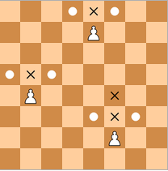

Пешки отличаются от других фигур тем, что ходят и осуществляют взятие по-разному: ходят прямо вперед, а взятие осуществляют по диагонали. Пешки ходят только вперед на одно поле за один ход, за исключением их самого первого хода, когда они могут пойти вперед на два поля. Пешка может пойти на поле, занимаемое фигурой (пешкой) соперника, которая расположена по диагонали на смежной вертикали, одновременно забирая эту фигуру (пешку). Пешки не могут ходить (осуществлять взятие) назад. Если прямо перед пешкой есть другая фигура или пешка, она не может пройти мимо этой фигуры или пешки либо взять ее.
